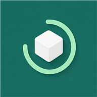

SUGO
Menos azúcar, sin culpa
SUGO es una app para Android que te ayuda a tomar conciencia del azúcar añadida que comés y tomás,
y a bajarla de a poco. Registrás en segundos (buscando, escaneando el código de barras o con una foto
de la etiqueta) y SUGO te muestra cuánta azúcar llevás, de dónde viene y cómo evoluciona semana a semana.
Qué podés hacer
- Registrar comidas y bebidas, con una base de alimentos de Honduras y Centroamérica.
- Escanear códigos de barras y descubrir los azúcares escondidos en los ingredientes.
- Seguir un plan que baja tu referencia diaria un poco cada semana.
- Ver patrones: qué día y a qué hora llega tu azúcar, y qué alimento suma más.
- Pedir compañía cuando tenés un antojo: Sugo te acompaña unos minutos hasta que pase.
- Rachas, logros, misiones y Sugo, la mascota que crece con vos.
Tus datos son tuyos
SUGO no tiene cuentas ni servidores propios: tus registros se guardan en tu teléfono. Si querés, podés guardar una copia en tu propio Google Drive, en una carpeta privada que solo SUGO puede leer. No hay publicidad ni analítica, y no vendemos ni compartimos tus datos. Leé la política de privacidad.
Contacto
¿Preguntas, ideas o algo que no funciona? Escribinos a soporte.sugo@gmail.com.